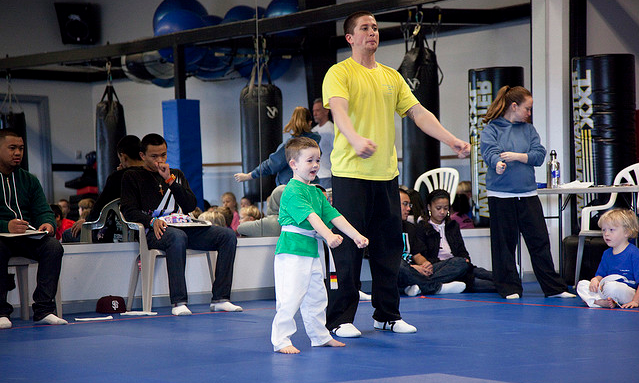

Taylor's House
Master Daythan Taylor is a Sixth Degree Black Belt, with over 39 years experience in the martial arts. This vast experience was key in the establishment of Taylor's House of Karate. His skills in Tae Kwon Do and Karate afforded him the opportunity to train the teachers at the school, many of whom have won multiple championships and all are well respected in the community. His contributions to the training programs, fitness classes, testing formats and atmosphere of hard work, respect and discipline is felt on daily basis.
Steve Willey, owner of Taylor's House of Karate, says that Daythan Taylor's contributions to the successful establishment of the school is unmeasurable.
Derek is a Marin County native, has been practicing martial arts for over 16 years. He earned his first degree Black Belt at West America Tae Kwon Do in 1999. Since January 2000, Derek has taught at Taylor's House of Karate, a school owned and operated by his family. Under the instruction of Daythan Taylor, a key instructor at the school, he earned his second degree black belt and in 2006, his third degree. As a teenager, Derek was ranked top four in the country in sparring. In 1998 he held the National Sparring Title.
Currently Derek is ranked third in Korean Traditional Forms and fourth for Japanese Traditional Forms. He teaches full time at Taylor's House of Karate, both karate classes and cardio classes. He just received his certification to teach crossfit.
Kyle is a Marin County native, started martial arts in the fall of 1996. He earned his first degree black belt in April 2000 at West America Tae Kwon Do. He was an instructor at West America from July 1999 until September 2002. During that time he competed in Forms and Sparring. He is a two time AAU California State Champion in forms and sparring, 1999 and 2000. In 2000 became AAU National Champion in forms and Fighting. From September 2001 to April 2007, he took a break from Martial Arts. In April 2007 he joined Taylor's House of Karate after many conversations with a friend and Taylor's House of Karate instructor, Derek Bentley, to get back into Karate.
Kyle has been at Taylor's ever since, teaching and helping out whenever needed. For the past couple of years he is back competing and is currently ranked 4th in the Feather Weight Sparring Division.
Team Proper has the notable distinction of having two members of the Bentley family competing on the team. Nicole Bentley is the elder of the two and is currently ranked number one in the nation in her division. In fact, it's not uncommon to see both Nicole and her brother, Derek, vying against each other on stage for Forms Grand Champion. Talk about a sibling rivalry.
Nicole began martial arts in 1999, at the age of 19. She earned her 1st degree Black Belt in 2006 and received her 2nd degree three years later.
Her First Place wins in 2009 include:
Phone Number: (415) 257-4300
Email: taylorkarate12@aol.com